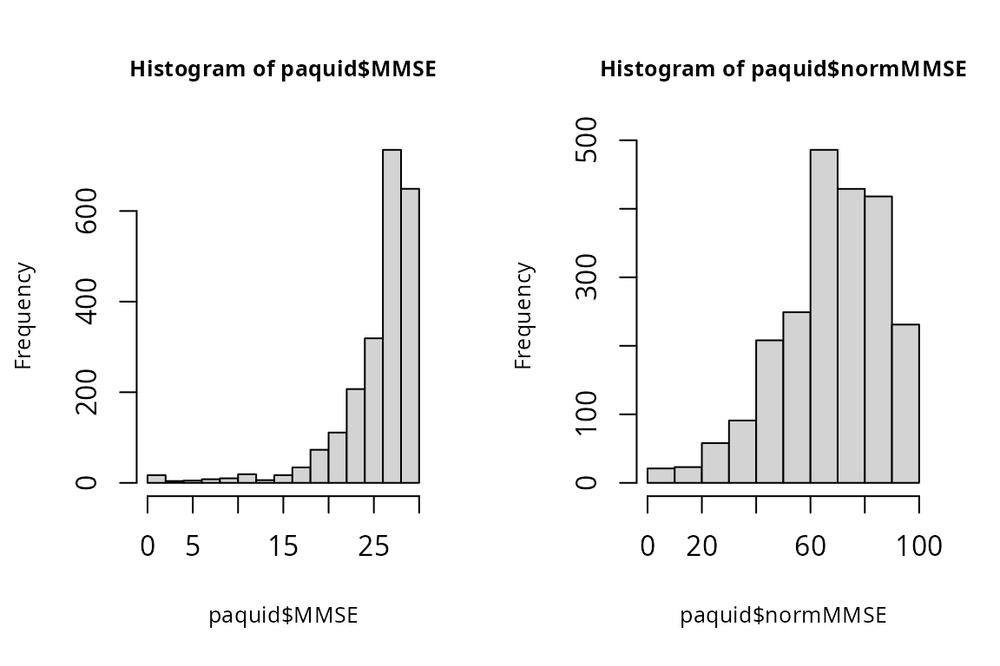
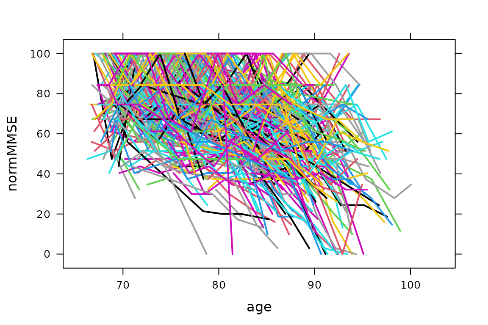

Functionalities of the package
The R package lcmm provides a series of functions to estimate statistical models based on the linear mixed model theory. It includes the estimation of:
- mixed models and latent class mixed models for Gaussian longitudinal outcomes (hlme),
- curvilinear and ordinal univariate longitudinal outcomes (lcmm)
- curvilinear multivariate outcomes (multlcmm)
- joint latent class mixed models (jlcmm and mpjlcmm) for (Gaussian and/or curvilinear) longitudinal outcomes and a time-to-event that can be possibly left-truncated right-censored and defined in a competing setting.
The package lcmm includes 5 main functions: lcmm, hlme, multlcmm, jlcmm and mpjlcmm. Each function is described in a different vignette. These functions apply to longitudinal markers, even those that have limited metrological properties but the functions can also be used in cross-sectional context.
For each model, maximum likelihood estimators are obtained using a modified Marquardt algorithm with strict convergence criteria based on the parameters and likelihood stability, and on the negativity of the second derivatives. The algorithm is implemented in the R package marqLevAlg with parallel computation. The package also provides various post-fit functions including goodness-of-fit analyses, classification, plots, predicted trajectories, individual dynamic prediction of the event and predictive accuracy assessment. Any question question or issue should be addressed on the github page: https://github.com/CecileProust-Lima/lcmm/issuesCalls functions
Each function is precisely introduced in the companion paper (Proust-Lima, JSS 2017 - https://doi.org/10.18637/jss.v078.i02).
hlme
This function is used for standard linear mixed models and their extension to multiple profiles of trajectory : the latent class linear mixed models
hlme(fixed, mixture, random, subject, classmb, ng = 1, idiag = FALSE, nwg = FALSE, cor = NULL, data, B, convB = 0.0001, convL = 0.0001, convG = 0.0001, prior, maxiter = 500, subset = NULL, na.action = 1, posfix = NULL)lcmm
This function is used to estimate mixed models when the outcome does not have a Gaussian distribution. The method is called “latent process model”. It currently handles curvilinear or non-Gaussian continuous markers using continuous link functions, and binary and ordinal markers using the probit framework with piecewise constant link functions. As hlme, the method also handles heterogeneous profiles of trajectories in a “latent process and latent class mixed model”.
lcmm(fixed, mixture, random, subject, classmb, ng = 1, idiag = FALSE, nwg = FALSE, link = "linear", intnodes = NULL, epsY = 0.5, cor = NULL, data, B, convB = 1e-04, convL = 1e-04, convG = 1e-04, maxiter = 100, nsim = 100, prior, range = NULL, subset = NULL, na.action = 1, posfix = NULL, partialH = FALSE)multlcmm
This function extends lcmm function when more than one marker measures the same underlying construct of interest. The function handles the same natures of markers as lcmm (possibly mixed into the same model): curvilinear or non-Gaussian continuous markers using continuous link functions, and binary and ordinal markers using the probit framework with piecewise constant link functions. With only binary/ordinal markers, multlcmm defines a continuous-time longitudinal IRT model. In addition, as other functions, multlcmm handles either homogeneous or heterogeneous profiles of trajectories.
multlcmm(fixed, mixture, random, subject, classmb, ng = 1, idiag = FALSE, nwg = FALSE, randomY = FALSE, link = "linear", intnodes = NULL, epsY = 0.5, cor = NULL, data, B, convB = 1e-04, convL = 1e-04, convG = 1e-04, maxiter = 100, nsim = 100, prior, range = NULL, subset = NULL, na.action = 1, posfix = NULL, partialH = FALSE)jlcmm
This function extends hlme, lcmm and multlcmm to jointly analyze times to event (in a competing setting). The latent structure shared between the longitudinal outcome(s) and the time(s) to event is latent classes.
Jointlcmm(fixed, mixture, random, subject, classmb, ng = 1, idiag = FALSE, nwg = FALSE, survival, hazard = "Weibull", hazardtype = "Specific", hazardnodes = NULL, TimeDepVar = NULL, link = NULL, intnodes = NULL, epsY = 0.5, range = NULL, cor = NULL, data, B, convB = 1e-4, convL = 1e-4, convG = 1e-4, maxiter = 100, nsim = 100, prior, logscale = FALSE, subset = NULL, na.action = 1, posfix = NULL, partialH = FALSE)mpjlcmm
This function is a multivariate version of jlcmm: it models multivariate longitudinal markers (possibly regrouped in several latent processes), and may also jointly analyze times to event (in a competing setting). The latent structure shared between the latent processes and the time(s) to event is latent classes.
mpjlcmm <- function(longitudinal,subject,classmb,ng,survival,
hazard="Weibull",hazardtype="Specific",hazardnodes=NULL,TimeDepVar=NULL,
data,B,convB=0.0001,convL=0.0001,convG=0.0001,maxiter=100,nsim=100,
prior,logscale=FALSE,subset=NULL,na.action=1,posfix=NULL,
partialH=FALSE,verbose=TRUE,nproc=1,clustertype=NULL)Dataset example
paquid subsample
In the wikis, lcmm is illutrated with paquid dataset. This is a subsample of 500 subjects from the original French prospective study Paquid. This dataset can not be used for epidemiological purposes as the subsample is not representative of the original cohort (in particular, dementia cases have been over sampled).
The data are in the longitudinal format including some variables such as 3 psychometric tests \(MMSE\), \(BVRT\), \(IST\), the depressive symptomatology scale \(CESD\) and the variables \(age\), \(agedem\) (age until dementia), \(dem\) (boolean with 1 for dementia), \(ageinit\), \(CEP\) (education level) and \(male\).
For visualizing the data (head of the table only):
head(paquid)
ID MMSE BVRT IST HIER CESD age agedem dem age_init CEP male
1 1 26 10 37 2 11 68.50630 68.5063 0 67.4167 1 1
2 2 26 13 25 1 10 66.99540 85.6167 1 65.9167 1 0
3 2 28 13 28 1 15 69.09530 85.6167 1 65.9167 1 0
4 2 25 12 23 1 18 73.80720 85.6167 1 65.9167 1 0
5 2 24 13 16 3 22 84.14237 85.6167 1 65.9167 1 0
6 2 22 9 15 3 NA 87.09103 85.6167 1 65.9167 1 0The different markers are collected at different times. In the dataset the timescale is \(age\).
For obtaining a quick summary of the data:
summary(paquid)
ID MMSE BVRT IST
Min. : 1.0 Min. : 0.00 Min. : 0.00 Min. : 5.00
1st Qu.:132.2 1st Qu.:25.00 1st Qu.: 9.00 1st Qu.:22.00
Median :263.0 Median :27.00 Median :11.00 Median :27.00
Mean :256.2 Mean :25.99 Mean :10.78 Mean :26.52
3rd Qu.:376.0 3rd Qu.:29.00 3rd Qu.:13.00 3rd Qu.:31.00
Max. :500.0 Max. :30.00 Max. :15.00 Max. :40.00
NA's :36 NA's :300 NA's :198
HIER CESD age agedem
Min. :0.000 Min. : 0.000 Min. : 66.28 Min. :66.87
1st Qu.:1.000 1st Qu.: 2.000 1st Qu.: 75.09 1st Qu.:82.03
Median :1.000 Median : 6.000 Median : 80.57 Median :86.61
Mean :1.272 Mean : 8.488 Mean : 80.53 Mean :85.89
3rd Qu.:2.000 3rd Qu.:12.000 3rd Qu.: 85.77 3rd Qu.:89.94
Max. :3.000 Max. :52.000 Max. :102.16 Max. :99.49
NA's :46 NA's :146
dem age_init CEP male
Min. :0.0000 Min. :65.25 Min. :0.0000 Min. :0.0000
1st Qu.:0.0000 1st Qu.:68.00 1st Qu.:0.0000 1st Qu.:0.0000
Median :0.0000 Median :71.92 Median :1.0000 Median :0.0000
Mean :0.3329 Mean :73.01 Mean :0.7373 Mean :0.3853
3rd Qu.:1.0000 3rd Qu.:76.96 3rd Qu.:1.0000 3rd Qu.:1.0000
Max. :1.0000 Max. :92.33 Max. :1.0000 Max. :1.0000
Some variables have missing values. This is not a problem when using lcmm package as missing values are systematically removed.
MMSE outcome
In the lcmm examples, MMSE is usually considered as the outcome. MMSE is a very common neuropsychological test to measure global cognitive functioning in the elderly. It has a very asymmetric distribution so that it is usually normalized to be applied with methods for Gaussian variables. This is done using a pre-normalization function dedicated to MMSE provided in NormPsy package:
library(NormPsy)
paquid$normMMSE <- normMMSE(paquid$MMSE)
par(mfrow=c(1,2))
hist(paquid$MMSE, cex.main=0.8, cex.lab=0.8)
hist(paquid$normMMSE, cex.main=0.8, cex.lab=0.8)
The individual repeated measures of MMSE to be modelled are:
library(lattice)
color <- paquid$ID
xyplot(normMMSE ~ age, paquid, groups = ID, col=color, lwd=2, type="l")